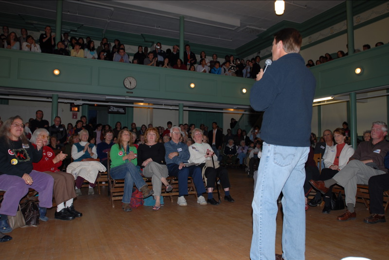

Explore the First Branch of Government - the cornerstone of American democracy where laws are made, budgets are controlled, and the people's voice is heard through their elected representatives.
The Great Compromise, bicameralism, apportionment, gerrymandering, and congressional powers
House and Senate differences, campaign funding, incumbency advantage, and nationalized elections
Delegate, trustee, and politico models; descriptive and collective representation
Party leadership structure, committee system, and how Congress divides its work
How a bill becomes a law, the filibuster, cloture, and modern legislation
View your final score, achievements, and print your completion certificate
Understanding the origins and structure of America's first branch
When U.S. citizens think of governmental power, they most likely think of the presidency. The framers of the Constitution, however, clearly intended that Congress would be the cornerstone of the new republic. After years of tyranny under a king, they had little interest in creating another system with an overly powerful single individual at the top.
Instead, while recognizing the need for centralization in terms of a stronger national government with an elected executive wielding its own authority, those at the Constitutional Convention wanted a strong representative assembly at the national level that would use careful consideration, deliberate action, and constituent representation to carefully draft legislation to meet the needs of the new republic.
Thus, Article I of the Constitution grants several key powers to Congress, which include overseeing the budget and all financial matters, introducing legislation, confirming or rejecting judicial and executive nominations, and even declaring war.
The origins of the U.S. Constitution and the convention that brought it into existence are rooted in failure—the failure of the Articles of Confederation. After only a handful of years, the states of the union decided that the Articles were simply unworkable. In order to save the young republic, a convention was called, and delegates were sent to assemble and revise the Articles.
Only a few years after the adoption of the Articles of Confederation, the republican experiment seemed on the verge of failure. States deep in debt were printing increasingly worthless paper currency, many were mired in interstate trade battles with each other, and in western Massachusetts, a small group of Revolutionary War veterans angry over the prospect of losing their farms broke into armed open revolt against the state, in what came to be known as Shays' Rebellion.
+15 points! Great discovery!
Shays' Rebellion (1786-1787) was an armed uprising in western Massachusetts led by Daniel Shays, a Revolutionary War veteran. Farmers were facing high taxes and debt, and many were losing their farms. When Shays and about 4,000 rebels attempted to seize a federal armory, it alarmed national leaders. The conclusion many reached was that the Articles of Confederation were simply not strong enough to keep the young republic together. This crisis was instrumental in convincing the states to send delegates to what became the Constitutional Convention of 1787.
The meeting these delegates convened became known as the Constitutional Convention of 1787. Although its prescribed purpose was to revise the Articles of Confederation, a number of delegates charted a path toward disposing of the Articles entirely. Under the Articles, the national legislature had been made up of a single chamber composed of an equal number of delegates from each of the states.
The division of legislators into two separate assemblies, chambers, or houses. The U.S. Congress consists of two chambers: the House of Representatives and the Senate.
Large states, like Virginia, felt it would be unfair to continue with this style of legislative institution. As a result, Virginia's delegates proposed a plan that called for bicameralism, or the division of legislators into two separate assemblies. In this proposed two-chamber Congress, states with larger populations would have more representatives in each chamber.
Predictably, smaller states like New Jersey were unhappy with this proposal. In response, they issued their own plan, which called for a single-chamber Congress with equal representation and more state authority.
+15 points! Excellent research!
| Feature | Virginia Plan (Large States) | New Jersey Plan (Small States) |
|---|---|---|
| Legislature | Two chambers (bicameral) | One chamber (unicameral) |
| Representation | Based on population in both houses | Equal representation for all states |
| State Power | Stronger national government | More state authority |
| Supporters | Large states (VA, PA, MA) | Small states (NJ, CT, DE) |
The storm of debate over how to allocate power between large and small states was eventually calmed by a third proposal. The Connecticut Compromise, also called the Great Compromise, proposed a bicameral congress with members apportioned differently in each house:
The Great Compromise resolved one of the most contentious debates at the Constitutional Convention. By creating a bicameral legislature with different methods of representation, the framers found middle ground that satisfied both large and small states. This compromise was essential to the Constitution's ratification.
In the final draft of the U.S. Constitution, the bicameral Congress established by the convention of 1787 was given a number of powers and limitations. These are outlined in Article I:
Although the basic design of the House and Senate resulted from a political deal between large and small states, the bicameral legislature established by the convention did not emerge from thin air. The concept had existed in Europe as far back as the medieval era. At that time, the two chambers of a legislature were divided based on class and designed to reflect different types of representation. The names of the two houses in the United Kingdom's bicameral parliament still reflect this older distinction today: the House of Lords and the House of Commons.
+15 points! Constitutional wisdom unlocked!
The framers intended there to be a complex and difficult process for legislation to become law. This challenge serves several important functions:
The bicameral system established at the Constitutional Convention and still followed today requires the two houses to pass identical bills, or proposed items of legislation. This ensures that after all amending and modifying has occurred, the two houses ultimately reach an agreement about the legislation they send to the president. Passing the same bill in both houses is no easy feat, and this is by design.
The process by which seats in the House of Representatives are distributed among the fifty states based on population data from the U.S. Census Bureau.
The Constitution specifies that every state will have two senators who each serve a six-year term. Therefore, with fifty states in the Union, there are currently one hundred seats in the U.S. Senate. Senators were originally appointed by state legislatures, but in 1913, the Seventeenth Amendment was approved, which allowed for senators to be elected by popular vote in each state.
Seats in the House of Representatives are distributed among the states based on each state's population, and each member of the House is elected by voters in a specific congressional district. Each state is guaranteed at least one seat in the House.
| Feature | House of Representatives | Senate |
|---|---|---|
| Total Members | 435 | 100 |
| Members per State | 1 or more, based on population | 2 |
| Term Length | 2 years | 6 years |
| Minimum Age | 25 | 30 |
Congressional apportionment today is achieved through the equal proportions method, which uses a mathematical formula to allocate seats based on U.S. Census Bureau population data, gathered every ten years as required by the Constitution.
At the close of the first U.S. Congress in 1791, there were sixty-five representatives, each representing approximately thirty thousand citizens. The roster of the House continued to grow until it reached 435 members after the 1910 census. Ten years later, following the 1920 census and with urbanization changing populations across the country, Congress failed to reapportion membership because it became deadlocked on the issue. In 1929, an agreement was reached to permanently cap the number of seats in the House at 435.
+15 points! Demographics expert!
Redistricting occurs every ten years, after the U.S. Census has established how many persons live in the United States and where. The boundaries of legislative districts are redrawn as needed to maintain similar numbers of voters in each while still maintaining a total number of 435 districts.
Currently, there are seven states with only one representative (Alaska, Delaware, Montana, North Dakota, South Dakota, Vermont, and Wyoming), whereas the most populous state, California, has the most congressional districts.
Modern Challenges:
The manipulation of legislative district boundaries as a way of favoring a particular candidate or party. The term combines the word "salamander" (a reference to the strange shape of these districts) with the name of Massachusetts governor Elbridge Gerry, who in 1812 signed a redistricting plan designed to benefit his party.
Despite the questionable ethics behind gerrymandering, the practice is legal, and both major parties have used it to their benefit. It is only when political redistricting appears to dilute the votes of racial minorities that gerrymandering efforts can be challenged under the Voting Rights Act.
+15 points! Political strategy revealed!
Following the Voting Rights Act of 1965, many Democrats led the charge to create congressional districts that would enhance the power of African American voters. The idea was to create majority-minority districts—districts in which African Americans became the majority and thus gained the electoral power to send representatives to Congress.
While these strangely drawn districts succeeded in nearly quintupling the number of African American representatives in Congress in just over two decades, they revealed a disturbing paradox: Congress as a whole has become less enthusiastic about minority-specific issues. How is this possible?
By creating districts with high percentages of minority constituents, strategists made the other districts less diverse. The representatives in those districts are under very little pressure to consider the interests of minority groups—and typically do not.
The first reapportionment controversy took place before any apportionment had even occurred, while the process was being discussed at the Constitutional Convention. Representatives from large slaveholding states believed that enslaved people should be counted as part of their total population. States with few or no enslaved people predictably argued against this.
The compromise eventually reached allowed for each enslaved person (who could not vote) to count as three-fifths of a person for purposes of congressional representation. Following the abolition of slavery and the end of Reconstruction, the former slaveholding states took numerous steps to prevent formerly enslaved people from voting—yet because these people were now free, they were counted fully toward the states' congressional representation.
The authority to introduce and pass legislation is a very strong power. But it is only one of the many that Congress possesses. Congressional powers can be divided into three types:
Powers explicitly stated in the Constitution. Article I, Section 8 lists these powers, including the power to levy taxes, declare war, raise an army and navy, coin money, borrow money, regulate commerce among the states and with foreign nations, establish federal courts and bankruptcy rules, establish rules for immigration and naturalization, and issue patents and copyrights.
Powers not specifically detailed in the Constitution but inferred as necessary to achieve the objectives of the national government. The "necessary and proper clause" directs Congress "to make all Laws which shall be necessary and proper for carrying into Execution the foregoing Powers." Laws that regulate banks, establish a minimum wage, and allow for the construction of interstate highways are all possible because of implied powers.
Powers neither enumerated nor implied but assumed to exist as a direct result of the country's existence. These include the power to control borders, expand the territory of the state, and defend itself from internal revolution. The general assumption is that these powers were deemed so essential that the framers saw no need to spell them out.
+15 points! Financial power understood!
The first of the enumerated powers, to levy taxes, is quite possibly the most important power Congress possesses. Without it, most of the others would be largely theoretical. The power to levy and collect taxes, along with the appropriations power, gives Congress what is typically referred to as "the power of the purse."
This means Congress controls the money—a fundamental check on both the executive and judicial branches.
Some enumerated powers were included specifically to serve as checks on the other powerful branches:
+15 points! Legal evolution explored!
One of the most important constitutional anchors for Congress's implicit power to regulate all manner of activities is the short clause in Article I, Section 8, which empowers Congress "to regulate Commerce with foreign Nations, and among the several States, and with Indian Tribes."
The Supreme Court's broad interpretation of this commerce clause has greatly expanded Congress's power over the centuries. From the earliest days of the republic until the end of the nineteenth century, the Supreme Court consistently handed down decisions that broadened Congress's power to regulate interstate and intrastate commerce.
However, in United States v. Lopez (1995), the Court struck down a law as an unconstitutional overstepping of the commerce clause—the first time it had done so in half a century. When the Affordable Care Act came before the Supreme Court in 2012, many believed the Court would strike it down. Instead, the justices upheld the law based on Congress's enumerated power to tax, rather than the commerce clause.
Understanding how members of Congress get elected and stay elected
The U.S. Constitution is very clear about who can be elected as a member of the House or Senate. A House member must be a U.S. citizen of at least seven years' standing and at least twenty-five years old. Senators are required to have nine years' standing as citizens and be at least thirty years old when sworn in.
Representatives serve two-year terms, whereas senators serve six-year terms. Per the Supreme Court decision in U.S. Term Limits v. Thornton (1995), there are currently no term limits for either senators or representatives, despite efforts by many states to impose them in the mid-1990s.
+15 points! Chamber dynamics unlocked!
The structural differences between the House and Senate create real differences in the actions of their members:
The heat of popular, sometimes fleeting, demands from constituents often glows red hot in the House. The Senate has the flexibility to allow these passions to cool.
Originally, when a state's two U.S. senators were appointed by the state legislature, the Senate chamber's distance from the electorate was even greater. Unlike members of the House who can seek the narrower interests of their district, senators must maintain a broader appeal in order to earn a majority of the votes across their entire state.
Modern political campaigns in the United States are expensive, and they have been growing more so. In 2020, the average Senate incumbent raised approximately $28.6 million, whereas the average challenger raised only about $5.3 million.
Raising this amount of money takes quite a bit of time and effort. Indeed, a presentation for incoming Democratic representatives suggested a daily Washington schedule of five hours reaching out to donors, while only three or four were to be used for actual congressional work!
+15 points! Campaign finance expert!
In the wake of the Citizens United decision, a new type of advocacy group emerged: the super PAC.
A traditional PAC is an organization designed to raise "hard money" to elect or defeat candidates. They are highly regulated in regard to the amount of money they can take in and spend.
Super PACs aren't bound by these regulations. While they cannot give money directly to a candidate or a candidate's party, they can:
In the 2020 election cycle, super PACs spent over $2 billion and raised about $1.3 billion more.
Several limits on campaign contributions have been upheld by the courts and remain in place:
The historical difficulty of unseating an incumbent in the House or Senate. Incumbents—elected officials who currently hold an office—typically have significant advantages over challengers in fundraising, name recognition, and access to state power.
In the House, the percentage of incumbents winning reelection has hovered between 85 and 100 percent for the last half century. In the Senate, there is only slightly more variation, but it is still a very high majority of incumbents who win reelection.
+15 points! Electoral strategy revealed!
Key Sources of Incumbent Advantage:
At the start of 2014, House majority whip Eric Cantor of Virginia was at the top of his game—popular with powerful insiders, an impressive fundraiser, and apparently destined to become Speaker of the House. Four months later, Cantor lost his own congressional primary in a stunning upset that shook the Washington establishment.
What happened? Cantor's strengths—his ambition, political skill, and deep connections to insiders—became weaknesses in the political environment of 2014, when conservative voices criticized the party for ignoring the people and catering to Washington insiders.
Yet between 1946 and 2012, only 5 percent of incumbent senators and 2 percent of House incumbents lost their party primaries. The incumbency advantage remains alive and well—Cantor's case may be the exception that proves the rule.
"All politics is local." This phrase, attributed to former Speaker of the House Tip O'Neill (D-MA), essentially means that the most important motivations directing voters are rooted in local concerns—the quality of roads, availability of jobs, and cost of public education.
A theory proposed by political scientist Angus Campbell in 1960 to explain why the president's party has consistently lost seats in Congress during midterm elections since the Civil War (with rare exceptions). Presidential elections create a "surge" of political stimulation that brings out voters who favor the president's party. Midterm elections witness a "decline" in turnout of less-interested voters, benefiting the opposition party.
+15 points! Election dynamics expert!
Evidence suggests that national concerns can function as powerful motivators at the polls. Consider the Iraq War's role in bringing about a Democratic takeover of the House in 2006 and Senate in 2008.
Unlike previous wars, the Iraq War was fought by a very small percentage of the population. Most citizens were not soldiers, few had relatives fighting, and most didn't know anyone who directly suffered. Yet voters in large numbers were motivated by the political and economic disaster of the war to vote for politicians who would end it.
Congressional elections may be increasingly driven by national issues. Just two decades ago, straight-ticket, party-line voting was still relatively rare. In much of the South, which voted overwhelmingly Republican in presidential elections, Democrats were still commonly elected to Congress. This began changing in the 1980s and 1990s. The 2014 midterm election was the most nationalized election in many decades, and that trend has continued.
Only in exceptional years has the midterm pattern been broken:
+15 points! Constitutional distinctions mastered!
The Constitution creates distinct requirements and characteristics for each chamber:
+15 points! Electoral pattern recognized!
Since the Civil War, with only rare exceptions (1934, 1998, 2002), the president's party has consistently lost seats in Congress during midterm elections. This pattern persists regardless of the president's popularity or the state of the economy.
Why does this happen?
Exploring how representatives serve their constituents and the nation
By definition and title, senators and House members are representatives. This means they are intended to be drawn from local populations around the country so they can speak for and make decisions for those local populations—their constituents—while serving in their respective legislative houses.
An elected leader's looking out for constituents while carrying out the duties of the office. The process of constituents voting regularly and reaching out to their representatives helps these congresspersons better represent them.
In reality, the job of representing in Congress is often quite complicated. Elected leaders do not always know where their constituents stand, nor do constituents always agree on everything. Navigating their sometimes contradictory demands and balancing them with the demands of the party, powerful interest groups, ideological concerns, the legislative body, their own personal beliefs, and the country as a whole can be a complicated and frustrating process.

A model in which representatives feel compelled to act on the specific stated wishes of their constituents. Delegates must employ some means to identify the views of their constituents and then vote accordingly. They are not permitted the liberty of employing their own reason and judgment.
A model in which representatives believe they are entrusted by the constituents with the power to use good judgment to make decisions on the constituents' behalf. In the words of eighteenth-century British philosopher Edmund Burke, "Parliament is not a congress of ambassadors from different and hostile interests... [it is rather] a deliberative assembly of one nation, with one interest, that of the whole."
A model in which members of Congress act as either trustee or delegate based on rational political calculations about who is best served—the constituency or the nation. This is the approach most representatives actually use.
+15 points! Representation strategy unlocked!
Every representative must remain firm in support of some ideologies and resistant to others:
For votes related to such issues, representatives will likely pursue a delegate approach.
For other issues, especially complex questions the public has little patience for (such as subtle economic reforms), representatives will tend to follow a trustee approach. This doesn't mean their decisions run contrary to public opinion—it merely means they are not acutely aware of or cannot adequately measure their constituents' views on these matters.
Congress works on hundreds of different issues each year, and constituents are likely not aware of the particulars of most of them.
The extent to which a body of representatives represents the descriptive characteristics of their constituencies, such as class, race, ethnicity, gender, and sexuality. This form of representation considers whether the racial, ethnic, socioeconomic, gender, and sexual identity of representatives reflects the population they serve.
At one time, there was relatively little concern about descriptive representation in Congress. A major reason is that until well into the twentieth century, White men of European background constituted an overwhelming majority of the voting population. African Americans were routinely deprived of the opportunity to participate in democracy, and Hispanics and other minority groups were excluded by the states.
+15 points! Gender representation revealed!
While women in many western states could vote sooner, all women were not able to exercise their right to vote nationwide until passage of the Nineteenth Amendment in 1920, and they began to make up more than 5 percent of either chamber only in the 1990s.
Many advances in women's rights have been the result of women's greater engagement in politics:
+15 points! Caucus history unlocked!
In the wake of the Civil Rights Movement, African American representatives began to enter Congress in increasing numbers. In 1971, to better represent their interests, these representatives founded the Congressional Black Caucus (CBC), an organization that grew out of a Democratic select committee formed in 1969.
Founding members included:
In recent decades, Congress has become much more descriptively representative of the United States. However, demographically speaking, Congress as a whole is still a long way from where the country is:
Congress members' most important function as lawmakers is writing, supporting, and passing bills. And as representatives of their constituents, they are charged with addressing those constituents' interests.
Federal spending on projects designed to benefit a particular district or set of constituents. The term has been around since the nineteenth century, when barrels of salt pork were both a sign of wealth and a system of reward.
Marks in a bill that direct some of the bill's funds to be spent on specific projects or for specific tax exemptions. Since the 1980s, earmarks became a common vehicle for sending money to various projects around the country. In 2011, after Republicans took over the House, they outlawed earmarks.
+15 points! Legislative politics revealed!
Consider the passage of the Affordable Care Act (ACA) in 2010. The desire for comprehensive universal health care had been a driving position of Democrats since the 1960s. When Democrats took control of Congress and the presidency in 2009, they began putting together their plan.
To pass the ACA, Democrats:
These efforts had the opposite effect. The Republican Party's constituency interpreted the allocations as bribery and felt the bill should be scrapped entirely. During the 112th and 113th Congresses, Republicans voted more than sixty times to either repeal or severely limit the ACA—understanding these efforts had little chance of reaching the president's desk, but demonstrating to constituents that they understood their wishes.
The relationship between Congress and the United States as a whole—whether the institution itself represents the American people, not just whether a particular member represents their district.
It is far more difficult for Congress to maintain collective representation than for individual members to represent their own constituents. Congress is a mixture of different ideologies, interests, and party affiliations, and the collective constituency of the United States has an even-greater level of diversity.
+15 points! Approval ratings analyzed!
After many years of deadlocks and bickering on Capitol Hill, the national perception of Congress has tended to run under 20 percent approval in recent years. Yet incumbent reelections remain largely unaffected!
This is because of the remarkable ability of many Americans to separate their distaste for Congress from their appreciation for their own representative. Paradoxically, this tendency to hate the group but love one's own representative actually perpetuates the problem—it blunts voters' natural desire to replace those earning low approval ratings.
When do approval ratings spike?
War has the power to bring majorities of voters to view their Congress and president in an overwhelmingly positive way.
Citizens tend to rate Congress more highly when things get done and more poorly when things do not. For example, during the first half of President Obama's first term, Congress's approval rating reached about 40 percent as both houses passed stimulus packages and worked on finance reform. Approval began to fade during debates over Obamacare and reached a low of 9 percent following the federal government shutdown in October 2013.
+15 points! Fiscal politics explained!
One of the events that began the approval rating's downward trend was Congress's divisive debate over national deficits. A deficit results when Congress spends more than it has available, conducting deficit spending by increasing the national debt.
Many modern economists contend that during periods of economic decline, the nation should run deficits because additional government spending has a stimulative effect that can help restart a sluggish economy. Despite this benefit, voters rarely appreciate deficits—they see Congress as spending wastefully during a time when they themselves are cutting costs.
The disconnect between public perception and policy goals is frequently exploited for political advantage. While running for the presidency in 2008, Barack Obama criticized the deficit spending of the George W. Bush presidency. Following Obama's election, Republicans championed spending cuts as a way of resisting Democratic policies. The concern over deficits shifted parties based on who held power.
Understanding party leadership and the committee system
The party leadership in Congress controls the actions of Congress. Leaders are elected by the two-party conferences in each chamber—in the House, these are the House Democratic Conference and the House Republican Conference. These conferences meet regularly and separately to elect their leaders and discuss important issues and strategies.
The presiding officer, the administrative head of the House, the partisan leader of the majority party in the House, and an elected representative of a single congressional district. The Speaker is the only House officer mentioned in the Constitution. Since 1947, the Speaker has been second in line to succeed the president in an emergency, after the vice president.
The Constitution does not require the Speaker to be a member of the House, although to date, all Speakers have been. The Speaker is invested with quite a bit of power:
+15 points! Leadership structure revealed!
| Position | House | Senate |
|---|---|---|
| Top Leader | Speaker of the House | Majority Leader |
| Constitutional Presiding Officer | Speaker of the House | Vice President (rarely present) |
| Second in Command | Majority Leader | President Pro Tempore |
| Party Discipline | Majority & Minority Whips | Majority & Minority Whips |
Key Difference: In the Senate, the constitutional president is the elected vice president of the United States, who may vote only in case of a tie. The real power is in the hands of the majority leader.
A high leadership position whose primary duty is to "whip up" votes and otherwise enforce party discipline. Whips make the rounds in Congress, telling members the position of the leadership and the collective voting strategy, and sometimes wave various carrots and sticks in front of recalcitrant members to bring them in line.
Unlike the House, the Senate doesn't have a Speaker. The duties held by the Speaker in the House fall to the majority leader in the Senate. According to the Constitution, the Senate's president is the vice president of the United States, but this is largely ceremonial—the VP may vote only in case of a tie.
The Constitution allows for the Senate to choose a president pro tempore—usually the most senior senator of the majority party—who presides over the Senate. Despite the title, this job is largely formal and powerless.
Because of the traditions of unlimited debate and the filibuster, the majority and minority leaders often occupy the floor together in an attempt to keep things moving along. For the Senate to get things done, they must cooperate to get the sixty votes needed to run this super-majority legislative institution.
With 535 members in Congress and a seemingly infinite number of issues to deal with, the two chambers must divide their work based on specialization. Congress does this through the committee system. Specialized committees in both chambers are where bills originate and most of the work that sets the congressional agenda takes place.
There are well over two hundred committees, subcommittees, select committees, and joint committees in Congress. The core committees are called standing committees. There are twenty standing committees in the House and sixteen in the Senate.
+15 points! Committee expert!
| Type | Description | Examples |
|---|---|---|
| Standing Committees | Permanent committees that are the first call for proposed bills. Fewer than 10% of bills are reported out of committee to the floor. | Appropriations, Judiciary, Armed Services |
| Joint Committees | Members from both House and Senate; explore key issues but have no bill-referral authority—informational only. | Joint Economic Committee |
| Conference Committees | Appointed ad hoc to reconcile different bills passed in House and Senate. | Tax Cuts and Jobs Act Conference (2017) |
| Select/Special Committees | Temporary committees set up for specific purposes, often investigations. | House Select Committee on Benghazi |
Committee chairs are very powerful. They control:
A chair can convene a meeting when members of the minority are absent or adjourn when things aren't progressing as the majority wishes. Chairs can hear a bill even when the rest of the committee objects.
+15 points! Legislative process revealed!
When a committee is eager to develop legislation, it takes methodical steps:
The report provides the majority opinion about why the bill should be passed, a minority view to the contrary, and estimates of the proposed law's cost and impact.
Because the Senate is much smaller than the House, senators hold more committee assignments than House members. House members historically defer to the decisions of committees, while senators tend to view committee decisions as recommendations, often seeking additional discussion that could lead to changes.
+15 points! Leadership dynamics revealed!
The Speaker serves until their party loses, until they are voted out, or until they choose to step down. Republican Speaker John Boehner became the latest Speaker to walk away from the position when it appeared his position was in jeopardy.
This event shows how the party conference (or caucus) oversees the leadership as much as, if not more than, the leadership oversees the party membership in the chamber. The Speaker must maintain the confidence of their party's members to remain in power.
Path to the Speakership: Historically, the majority leader tends to be in the best position to assume the speakership when the current Speaker steps down, though this is not guaranteed.
+15 points! Senate customs understood!
The Senate has developed unique traditions that give individual senators significant power:
These traditions mean that the majority and minority leaders must often work together. The 60-vote threshold for cloture means the majority party rarely has enough votes to act alone, requiring bipartisan cooperation.
How a bill becomes a law—the classic and modern processes
The traditional process by which a bill becomes a law is called the classic legislative process. First, legislation must be drafted. Theoretically, anyone can do this—much successful legislation has been initially drafted by think tanks, advocacy groups, or the president. However, only a bill introduced by a member of Congress can hope to become law.
+15 points! Legislative process mastered!
Once a committee has been selected, the committee chair is empowered to move the bill through the committee process. This occasionally means the chair will refer the bill to one of the committee's subcommittees.
If the chair decides not to hold a hearing, this is tantamount to killing the bill in committee. Most bills die in committee. The hearing provides an opportunity for the committee to hear and evaluate expert opinions on the bill from officials, bill sponsors, industry lobbyists, interest groups, and academic experts.
The amending and voting process in a congressional committee. In the end, with or without amendments, the committee or subcommittee will vote. If the committee decides not to advance the bill, it is "tabled"—which typically means the bill is dead, though it can potentially be brought back up for a vote.
Once a bill reaches the Senate, the chamber's flexibility about speaking gave rise to a unique tactic: the filibuster.
A parliamentary maneuver used in the Senate to extend debate on a piece of legislation as long as possible, typically with the intended purpose of obstructing or killing it. The word comes from the Dutch word "vrijbuiter," which means pirate—appropriate since a filibustering senator virtually hijacks the floor.
The tactic was perfected in the 1850s as Congress wrestled with the complicated issue of slavery. After the Civil War, use of the filibuster became even more common.
A parliamentary process to end debate in the Senate, as a measure against the filibuster. Invoked when three-fifths of senators (60) vote for the motion. For judicial nominations, only 51 votes are needed.
+15 points! Senate procedure expert!
Unlike the traditional filibuster, in which a senator took the floor and held it for as long as possible, the modern filibuster is actually a perversion of the cloture rules. When partisanship is high, senators can request cloture before any bill gets a vote.
This has the effect of increasing the number of votes needed for a bill to advance from a simple majority of 51 to a super majority of 60. The effect is to give the Senate minority great power to obstruct.
Exceptions: Filibusters are not permitted on the annual budget reconciliation act. This is how:
For much of the nation's history, the classic process was the standard method by which a bill became law. Over the last few decades, however, changes in rules and procedure have created alternate routes—what political scientists describe as a new but unorthodox legislative process.
+15 points! Modern Congress revealed!
According to political scientist Barbara Sinclair, the primary trigger for the shift was the budget reforms of the 1970s. The 1974 Budget and Impoundment Control Act gave Congress a mechanism for making large, all-encompassing budget decisions.
A large step occurred in 1981 when President Reagan's administration suggested using the budget to push through economic reforms. The benefit was forcing an up-or-down vote on an entire package—an omnibus bill.
Key Features of Modern Legislating:
A packaged bill that allows Congress to quickly accomplish policy changes that would have taken many votes and great political capital over a long period of time. Creating and voting for an omnibus bill forces an up-or-down vote on the whole package.
An important characteristic of modern legislating is the greatly expanded power of party leadership over the control of bills. With high political stakes, the leadership is reluctant to simply allow committees to work things out on their own.
The practice of multiple referrals—where entire bills or portions are referred to more than one committee—greatly weakened the specialization monopolies committees had held, primarily in the House. With less control over bills, committees naturally reached out to the leadership for assistance.
In the early days of the republic, Congress's role was rarely disputed. However, with Marbury v. Madison (1803), the Supreme Court asserted its authority over judicial review. Initially, the presidency was also fairly weak compared to the legislature. But presidents have sought to increase their power almost from the beginning, typically at the expense of Congress.
+15 points! Power dynamics revealed!
By the nature of enumerated powers, the president is most powerful—and Congress least powerful—during wartime.
Key moments in the power shift:
Today, the seemingly endless bickering between the president and Congress is a reminder of the ongoing struggle for power between the branches, and between the parties, in Washington, DC. Presidential use of executive orders on domestic policy and executive agreements on foreign policy have furthered this trend—when used in areas where Congress has delegated authority, they replace legislation and treaties.
+15 points! War powers explained!
Following the twin scandals of Vietnam and Watergate in the early 1970s, Congress attempted to assert itself as a coequal branch, even in creating foreign policy. The War Powers Resolution was intended to strengthen congressional war powers.
However, the resolution ended up clarifying presidential authority in the first 60 days of a military conflict rather than limiting it. Presidents have argued that the resolution actually acknowledges their right to commit troops for up to 60 days without congressional approval.
Key provisions:
Despite these provisions, presidents have consistently found ways to circumvent or ignore the resolution's limits.
Use your browser's "Save as PDF" option. Submit this PDF — screenshots will not be accepted.
Chapter 11: Congress
| Section 1: Institutional Design | ⭕ | --:-- |
| Section 2: Congressional Elections | ⭕ | --:-- |
| Section 3: Representation | ⭕ | --:-- |
| Section 4: Organizations | ⭕ | --:-- |
| Section 5: Legislative Process | ⭕ | --:-- |